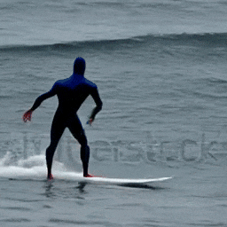
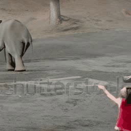
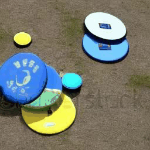
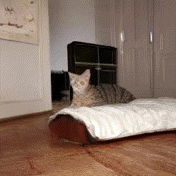
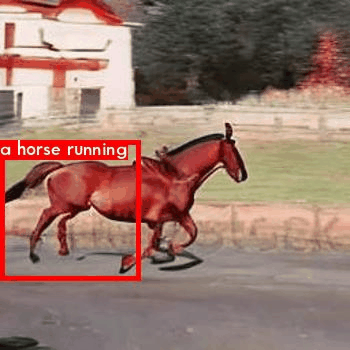

Generated Examples
Boiler Text
Coref-SV
Scene 2: Then, Darth Vader is surfing on the same waves.
Baseline
TALC(Ours)
Caption.
Scene 2: A person enters and picks the stuffed toy.
Baseline

TALC(Ours)
Caption.
ActionBench-Direction prompts
pushing stuffed animal from left to right
ModelScopeT2V
VideoDirectorGPT (Ours)

pushing pear from right to left
ModelScopeT2V
VideoDirectorGPT (Ours)

Video generation examples on ActionBench-Direction prompts. Our video plan's object layouts (overlaid) can guide the Layout2Vid module to place and move the 'stuffed animal' and 'pear' in their correct respective directions, whereas the objects in the ModelScopeT2V videos stay in the same location or move in random directions.
VPEval Skill-based prompts
a pizza is to the left of an elephant
ModelScopeT2V
VideoDirectorGPT (Ours)

four frisbees
ModelScopeT2V
VideoDirectorGPT (Ours)

Video generation examples on VPEval Skill-based prompts for spatial and count skills. Our video plan, with object layouts overlaid, successfully guides the Layout2Vid module to place objects in the correct spatial relations and to depict the correct number of objects, whereas ModelScopeT2V fails to generate 'pizza' in the first example and overproduces the number of frisbees in the second example.
User-Provided Input Image → Video
Scene 2: a <S> goes to the cream-colored kitchen and eats a can of gourmet cat snack.
Scene 3: a <S> sits next to a large floor-to-ceiling window.
Input
Generated Gif
Input
Generated Gif
Input


Generated Gif
Input


Generated Gif
Video generation examples with custom entities. Users can flexibly provide either text-only (1st row) or image+text (2nd to 4th rows) descriptions to place custom entities when generating videos with VideoDirectorGPT. For both text and image+text based entity grounding examples, the identities of the provided entities are well preserved across multiple scenes.
Human-in-the-Loop Editing
Original Gif
Human Edit
Original Gif
Human Edit
Original Gif
Human Edit
Video generation examples for human-in-the-loop editing. Users can modify the video plan (e.g., add/delete objects, change the background and entity layouts, etc.) to generate customized video contents. Given the same text prompt "A horse running", we provide visualizations with a smaller horse and different backgrounds (i.e., "night street" and "grassland").